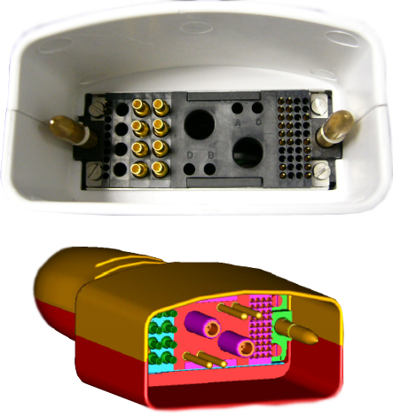
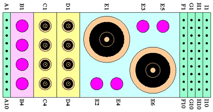
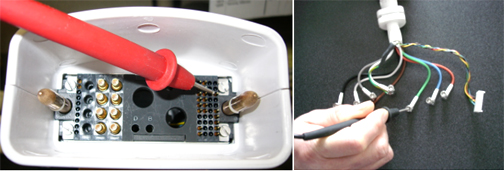

- 00000018WIA30EBCE20GYZ
- id_131069492.0
- Feb 22, 2021 1:47:01 AM
HD 8-Channel CTL Coil Troubleshooting
Personnel Requirements
| Required Persons | Procedure |
| 1 | 30 min |
Overview
The following tips can be used to troubleshoot common problems with the 3.0T HD CTL Array coil by GE – A/B connector.
Preliminary Requirements
Tools and Test Equipment
Digital Volt Meter
Phantoms for IQ testing. See the following table.
| Item | Qty | Effectivity | Part # | Manufacturer |
| Phantom Kit, CTL Coil, 3.0T, CT Section | 1 | Legacy Phantom Set | 2381682-9 | - |
| Phantom Kit, CTL Coil, 3.0T, TL Section | 2 | Legacy Phantom Set | 2381682-10 | - |
Required Conditions
The following coil configuration names must be installed to run the MCQA tool:
-
GE_HDx CTL TOP
-
GE_HDx CTL MID
-
GE_HDx CTL BOT
-
GE_HDx CTL 123
-
GE_HDx CTL 234
-
GE_HDx CTL 345
-
GE_HDx CTL 456
-
GE_HDx CTL 12
-
GE_HDx CTL 23
-
GE_HDx CTL 34
-
GE_HDx CTL 45
-
GE_HDx CTL 56
Procedure
Receiving No Signal
Problem:
You are unable to pre-scan or are scanning and yet receiving no signal.
Possible Solution:
-
Verify the green light above the Port A is illuminated. This indicates the coil is properly plugged into the system.
-
Verify that the Landmark is correct and that the cradle has not unlatched.
-
Perform a continuity check on the output cable (see Section 4.4). The continuity check must be performed by a GE authorized Service Engineer.
-
Verify that the coil is positioned with the cable exiting towards the bore.
-
Verify that the cable is not looped or crossed.
Try to scan (transmit and receive) with a similar 8-channel coil. For this test, be sure to remove the imaging coil from the magnet bore before you scan with the substitute coil. If you still receive no signal the problem probably lies with the MR system. If the scan completes successfully, there is probably a problem with the CTL coil. Contact GE for further assistance. If you are unable to scan with the substitute coil, there may be a system problem related to this particular coil type.
Image Quality
Problem:
Poor IQ, shaded images, or if MCQA fails
Possible Solution:
-
Perform a continuity check on the output cable (see Section 4.4). The continuity check must be performed by a GE authorized Service Engineer.
-
Verify that there are no loops in the cables.
-
Verify that there are no metal or ferromagnetic objects close to the coil, patient or magnet (i.e., safety pin, hair pin).
-
Verify that the coil is properly positioned.
-
Verify that your center frequency is within the frequency adjustment range for your system.
-
Verify that the R1, R2 and TG values from the pre-scan are within normally expected ranges.
If you have not done so already, perform the coil Quality Assurance test. If the values you obtain do not fall within normal operating parameters, investigate this further by performing a phantom scan with the substitute coil. For this test, be sure to remove the imaging coil from the magnet bore before you scan with the coil. If you still have the same problems, there is probably an MR system problem. If the substitute coil scan is satisfactory, acquire a scan using another coil of the same type (receive-only, phased array). If the image quality is visibly improved, there may be a problem with the CTL coil. Contact GE for further assistance. If the image quality still suffers, there may be a system problem related to imaging with this type of coil.
Artifacts
Problem:
There is a black line or signal void on the image.
Possible Solution:
Verify that there is no metal present in the area being scanned in or on the patient.
Output Cable Check
Visual Check
Before removing the cable assembly from the coil, visually inspect the pin layouts of the coil connector. The connector of the CTL coil has 2 pins in Column A (A1 and A2), eight pins in Column F (F1-F6, F9 and F10), six pins in Column G (G1-G6), six pins in Column I (I3, I6-I10), and eight coaxial connectors in Column C and D, If there are any broken, deformed or recessed pins or coaxial connectors, replace the cable assembly, see Cable Replacement.


The center pins of the System Connector receive coaxial connectors are extremely fragile. Do not attempt to make any measurements at these center pins.
Remove the cable assembly from coil. Refer to Cable Replacement.
RF Signal Channels Check

The following procedure will rule out a short to GND for each of the signal pins detailed in the following table. This check does not determine continuity for each of the MC signal connections.
With the coil cable disconnected from the coil, use a multimeter (Set to Continuity) to assure an open circuit condition exists between the designated pin and GND for each signal channel shown in Table 1.
| Coil Side RF Connector GND Shield | Coil Side RF Connector Center Pin |
| CH1 | CH1 |
| CH2 | CH2 |
| CH3 | CH3 |
| CH4 | CH4 |
| CH5 | CH5 |
| CH6 | CH6 |
| CH7 | CH7 |
| CH8 | CH8 |
If one or more of the readings indicate a short, replace the cable. If all of the above readings indicate an open circuit condition, proceed to the DC Lines Continuity Check.
DC Lines Continuity Check
With the coil cable disconnected from the preamplifier box, use a multimeter (set to continuity) to determine continuity between the designated pins for each control channel.
Check for Continuity of DC Lines in the System Cable
See Table 2 and Figure 4. If any pair indicates an open, replace the output cable.
| System Side Connector Pin | DC wires of Coil Side | DC Bias of the System |
| F1 | Black | MC1 |
| F2 | Brown | MC2 |
| F3 | Red | MC3 |
| F4 | Yellow | MC4 |
| F5 | Green | MC5 |
| F6 | Blue | MC6 |

If any pair indicates an open, replace the output cable.
Check for Continuity of DC Pins in the System Connector
See Table 3. If any pair indicates an open, replace the output cable.
| Pair | System Side Connector Pin | System Side Connector Pin |
| 1 | A1 | A2 |
| 2 | J9 | J10 |
| 3 | M9 | M10 |
Check for Continuity of the Preamp Bias Line
The system supplies the preamp bias voltage through Pin I3 and RF cables to the coil. See Table 4 and Figure 5. Use a DVM to check resistance for continuity between I3 and the central pin of the SMB connector at the end of each RF cable. If any pair indicates an open, replace the cable assembly.
| System Side Connector Pin | Coil Side RF Connector Center Pin |
|
I3 Note : need to check from only one pin from the system side to 8 from the coils side connector. | CH1 |
| CH2 | |
| CH3 | |
| CH4 | |
| CH5 | |
| CH6 | |
| CH7 | |
| CH8 |
